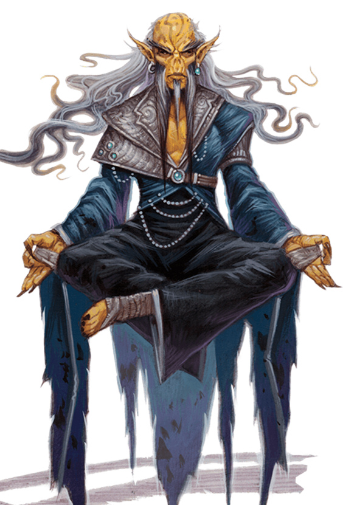

几千年以前吉斯泽莱人和吉斯洋基人同属于一个被夺心魔奴役的类人种族。在传说中的英雄吉斯代理他们摆脱了夺心魔的统治得到自由之后，古老的吉斯种族自此之后就分裂成了两个敌对的种族。当吉斯洋基人追寻残酷的侵略，军事的力量和神秘的力量时，吉斯泽莱人把他们的注意力转向了神秘的自我世界从而成为了运用心灵和精神力量的苦修者。他们在各个位面远行，对抗他们阴险的敌人――夺心魔他和他们的吉斯洋基亲属。
性格：当可以使用一个词的时候吉斯泽莱人不会用两个。他们多疑并且愤世嫉俗，并总是料想到人格中最坏的部分。吉斯泽莱人不会在愚蠢的人身上浪费时间，也很少去帮助那些从来不会帮助别人的人。他们很挑剔，很难信任别人，和人相处的时候小心谨慎。很多吉斯泽莱人鄙视舒适的生活并且遵循苦修的信条生活着。他们的居住地和据点看上去更像是寺庙而不是村镇。
生理描述：吉斯泽莱人和吉斯洋基人非常相似。吉斯泽莱人就像他们的同族一样是高大但憔悴的人形生物，站立起来略微超过6英尺，而标准体重则为160磅。他们有着粗糙的黄色皮肤，红褐色头发，不过他们习惯剃去头发。他们的鼻子几乎是扁平的，双眸是暗黄色或者灰色的，耳朵是尖的。吉斯泽莱人喜欢褐色的袍子并且避免穿炫耀的服饰。
关系：与吉斯洋基人不同，吉斯泽莱人并不蔑视物质界的居民并且很少打扰他们。他们仅仅把物质界的人看作不相关的并且不再他们身上浪费时间。那些证明了自己的能力，决心和对于位面了解的物质界生物则会因为他们有用的能力而被致以敬意。
吉斯泽莱人通常冷静并且遵守自己的节律，他们对于夺心魔和吉斯洋基人只感到一种冷酷的，有目的的恨意。他们对于史拉蟾也有一些敌意，尽管如此当面对同样的威胁时他们也会合作起来。
阵营：吉斯泽莱人是务实自主的，他们并不恶毒也不希望超过别人。大多数是中立的，并且偏向善良或者邪恶。
吉斯泽莱的国度：吉斯泽莱人居住在林勃海之中，他们那漂浮的城市和隐藏在漩涡中的寺院里。和吉斯洋基人一样他们必须使用位面传送或者类似的位面转移效果才能够到达物质界(假定吉斯泽莱玩家在开始职业的时候已经进行了位面传送)。
信仰：吉斯泽莱人没有特别的信仰很少崇拜任何神。他们追寻他们自己头脑中的原始力量作为替代。他们尊敬他们种族不朽的巫师皇，不过他们并不崇拜他也并不因为他们的尊敬得到任何神术。
语言：吉斯泽莱人和吉斯洋基人一样使用吉斯语。他们也说通用语。
姓名：吉斯泽莱人并不是很注重家族和氏族，他们更喜欢用价值来判断并组织他们的社会。他们创造出了一系列称号和等级在用来授予给个人作为嘉奖，而在日常生活中依旧用名字互相称呼。
冒险：吉斯泽莱人是自主的，所以对于他们的家和家庭并没有特别的联系感。这导致只需要一点理由就可以让一个吉斯泽莱人穿过位面出发旅行。对于吉斯泽莱人来说物质的旅行是通往心灵的方法，很多冒险者会年复一年的在物质界的不同大陆间游荡。